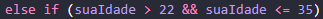

É usado para iniciar uma tratativa de condição. Uma verificação de condição SEMPRE irá iniciar com if.
Verifica se a condição seguinte ao * if * irá atender ao solicitado. Quando se utiliza * else * o navegador NÃO para a execução da verificação, mesmo que a condição já tenha sido atendida. Exemplo: você atribuiu uma condição com 10 linhas de * else *. O navegador irá realizar a verificação em todas as linhas, mesmo que a condição já tenha sido atendida na primeira linha e as demias não atendam ao solicitado.
O * else if * pode ser utilizado para que a verificação seja interrompida caso a condição seja atendida. Se a condição atribuída for atendida logo na primira linha do script, o navegador irá interromper a verificação das demais condições.
A instrução sempre virá no formato de * SE (uma condição), ENTÃO (o que deve ser feito - um prompt, um alert, ou console log), SENÃO (caso a primeira verificação não seja atendida - o que deve ser feito) - SENÃO ou CASO CONTRÁRIO podem ser utilizados diversas vezes para verificação das condições - resultado final com base nas condições determinadas.
Serão utilizadas verificações baseadas em verdadeiro ou falso para montagem de fluxo de condições.
São valores utilizados para definir * false * para o JS.
O primeiro comparativo é o == ou ===. Cuidado para não utilizar o =, que é usado para atribuir um valor a uma variável. == compara os valores, enquanto === compara os valores e o tipo. Caso uma variável seja atribuída como uma string, e você solicitar uma comparação com um número e usar o ==, se a condição for atendida, o valor será TRUE. Caso você utilize o === neste mesmo caso, o resultado será FALSE pois a string não foi atribuída a um valor numérico (Number, parseInt ou ParseFloat). Caso tenha sido aplicado um valor numérico à string, aí sim vai dar um resultado TRUE pois além dos valores serem iguais, os tipos também são.

Perceba que o * else * não está seguido por uma condição, isso quer dizer que qualquer outra resposta que NÃO atenda à condição, será direcionado ao alert 'Acesso negado' no exemplo acima, e 'Voce e muito velho para essa tarefa' no exemplo abaixo.

Neste caso foi considerada a idade maior durante o intervalo analisado, pois dessa forma não se fez necessário utilizar o &&, que significa and ou e, neste caso poderia ser usado da seguinte forma:
